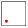

1 On Teaching Part I
Teaching the material in Prologue: How to Program and Fixed-Size Data calls for different approaches, depending on the context. At the college level, instructors do not have the time to re-introduce students to functions and their workings; they also need to get to material that makes the design-oriented approach to programming look relevant. In contrast, a teacher at a K-12 school must realize that only a few of the students will end up as programmers but all of them ought to benefit from an introduction to systematic problem solving as presented in this book. Finally, the line between these two situations is not a sharp separator; some college instructors may wish to focus on strengthening their students’ skills and some high school teachers may wish to provide a college-level experience for theirs. The two sections of this note sketch out two points on this scale. For more advice, consider sending email to our education list.
Acknowledgment Thanks to Vladimir Gajić for comments on the presentation.
1.1 Teaching Part I: College
For a college-level audience, we recommend to start with Prologue: How to Program, but skipping Not! initially.
After finishing Prologue: How to Program, we show students how animate works by translating create-rocket-scene into a big-bang program. We explain big-bang as a small sliver of the underlying operating system, the part that takes care of clock ticks and keystrokes and other things. Instead of covering all of its features, lectures introduce them as needed on an informal basis.
numbers, Booleans, strings and images (Arithmetic);
intervals and enumerations (Intervals, Enumerations, and Itemizations);
and structure types (Adding Structure).
- For example, a lecture on Arithmetic may wish to focus on The Arithmetic of Strings with a problem like this one:If this problem looks overwhelming, start simple. Allow the program to collect an arbitrary number of digits and don’t stop it after s seconds. Add those properties after the first solution runs.
Sample Problem Design a world program that collects numeric keystrokes in a given interval. The program also stops when it has collected five digits. It returns the digits as one string.
Figure 1 shows a solution. Note how studying this problem naturally calls for using features and functions from across BSL, not just string-manipulation functions. It also requires looking up what functions are available in BSL because the solution calls for string-numeric?, string-append, and so on.(require 2htdp/universe) (require 2htdp/image) ; collect up to five digits for s seconds (define (collect5 s) (big-bang "" [to-draw render] [on-tick do-nothing 1 s] [on-key record] [stop-when 5digits?])) (define (render digits-so-far) (overlay (text digits-so-far 22 "blue") (rectangle 200 30 "solid" "red"))) (define (record digits-so-far ke) (cond [(string-numeric? ke) (string-append digits-so-far ke)] [else digits-so-far])) (define (5digits? digits-so-far) (= (string-length digits-so-far) 5)) (define (do-nothing s) s) - To introduce intervals and enumerations, consider a variation of the launch problem from Prologue: How to Program:
Sample Problem Design a world program that simulates a countdown and the liftoff of a rocket. Assume the program is given the number of seconds before liftoff and that it shows the flight of the rocket for three seconds.
This problem calls for using two intervals: the one before liftoff and the one after.Also consider the simulation of a traffic light that cycles through the three primary colors. Students can draw a schematic traffic light or they can get creative.
- Structures come into play when a problem deals with two objects:
Sample Problem Revise the rocket launch program so that it also shows a satellite that moves from left to right at a constant speed. Of course the satellite re-appears on the left once it reaches the right boundary of the scene.
The solutionTechnically, a BSL programmer could solve this problem without structures, using complex numbers instead. Say so for the knowledgeable students and then move on. of this problem calls for a structure that combines the state of the rocket with the position of the satellite, meaning two numbers.
This approach to covering the first part of the book unquestionably exhausts the students. By the time, the lecture cover structure type definitions, they will hang on for their dear life. This state is the goal of the exercise. Now have them read Not! and tell them that a good introduction to programming needs a systematic approach. Otherwise they will drown in a flood of details.
At this point your students ought to be receptive to a lecture
From Chaos to Order
Programming needs a programming language. If a student has studied a foreign language before, he/she knows that the acquisition of a language starts with some basic vocabulary and a grammar. Once a student of a language can form sentences, he/she also need a way to understanding the meaning of sentences.
This book starts with BSL, a language tailored to the needs of novices. The whole vocabulary and grammar can be found in the documentation of BSL. The vocabulary includes keywords such as define and cond as well as primitive or built-in functions such as + and string-append.
Computer scientists can explain the meaning of programs in many different ways. Sometimes a programmer must understand how a program affects some specific computer. At other times, the computer hardware is assumed to be something generic but the programmer needs to understand how a program uses this generic hardware. But most of the time, programmers have no such needs, in which case they can focus on how the functions of the underlying language work on its data.
For BSL, the meaning is easiest to understand in terms of the rules from a middle school pre-algebra course. The most important rule is function application, which says that f(5) is equal to the definition of f with x replaced by 5. For primitive functions students just need to know what they do.
DrRacket comes with the stepper. If you haven’t shown the stepper yet, now is the time. Instead of scaring students with blackboard rules from pre-algebra, just show them how BSL programs compute with a series of small examples. Start with a one-line example like a polynomial and work your way to a simple big-bang function. The key is to let students know that this is how DrRacket views programs, that it does so automatically, and that if in doubt, they can mimic it with the stepper or by hand.
Languages in computing are often supplemented with libraries. While we could have baked all functions into BSL, students must find out at some point how important knowledge of libraries is. Show them the documentation for the 2htdp/image library and encourage them to play with the functions.
Finally, when a programmer has a basic understanding of the language, its meaning, and its libraries, it is time to study what programming is all about. In a sense, it is the formulation of sentences in the language. When it comes to programming, formulating sentences can be done systematically, starting with the problem statement all the way to complete code.
Now it’s time to start covering the design recipes for functions and programs, as spelled out in How to Design Programs. The space of design recipes is two-dimensional:one dimension covers the series of activities
and the other one arranges data in a series of increasingly complex forms.
Additional dimensions concern abstraction and efficiency concerns.
At this point, it is best to switch over to a full-fledged coverage of the book, starting with Adding Structure.
1.2 Teaching Part I: K-12
For a high school audience, we also recommend working through Prologue: How to Program, including Not!. The latter clarifies that, while programming might be fun, sooner or later people get stuck and need help with problems. A teacher may wish to ask students whether they have gotten stuck with problems in mathematics courses, such as creating expressions for word problems.
(define (ball-drop t) (place-image (circle 5 "solid" "red") 5 (* 3 t) (empty-scene 10 500))) (animate ball-drop)
(require 2htdp/image) (require 2htdp/universe) (define WIDTH 300) (define DELTA 3) (define BALL (circle 5 "solid" "red")) (define MT (empty-scene WIDTH 10)) (define (main x0) (big-bang x0 [to-draw render] [on-tick bounce])) (define (bounce x) (cond [(>= x 0) (cond [(> (+ x DELTA) WIDTH) (- WIDTH)] [else (+ x DELTA)])] [(<= x 0) (cond [(> (+ DELTA x) 0) 0] [else (+ DELTA x)])])) (define (render x) (place-image BALL (abs x) 5 MT))
Sample Problem Create a program that displays a ball bouncing back and forth between the two “walls” of the canvas. Assume the ball moves 3 pixels per tick to the left or right, that the scene is a 300-by-10 canvas, and that the ball is a solid, red circle of 5 pixels.
the current location
the current direction
At this point, it is also a good time to explain that this problem solving
method applies to mathematics problems—
The goal of Arithmetic is to work with expressions like those from (pre-)algebra courses. One difference is that here, expressions deal with many more forms of data than numbers, in particular words (aka strings), images, and Booleans. Another one is that this chapter emphasizes formulating expressions instead of evaluating them. For the latter, use DrRacket’s stepper; it really evaluates expressions the way students are supposed to in (pre-)algebra courses. This link should let them know what the book means when it says “DrRacket is just a very fast student, evaluating expressions and showing of the resulting numbers, strings, and images.”
DrRacket’s interactive nature should help students with the task of creating expressions. They can simply enter the expressions in the interactions area and experiment with the functions until the expression works concretely.
Sample Problem Create an expression that concatenates two words, say "hello" and "world" by inserting a hyphen between them.
A student might try the following:> (string-append "hello" (string-append "-" "world")) "hello-world"
> (string-append "hello" "-" "world") "hello-world"
You may now suggest that the two words are define in the definitions area:and ask the students to use word1 and word2 instead of the concrete strings:> (string-append word1 "-" word2) "hello-world"
This kind of experimentation puts the student well on the way to the creation of functions, an act that many mathematics pedagogues consider the key to mathematical maturity. Functions is all about this point, but here is its essence.
Sample Problem Create an expression that puts a 3-pixel, solid red circle at x = 10 and y = 10 on a 50-by-50 empty scene. Repeat the exercise for y = 20, y = 30, and y = 40.
> (place-image (circle 3 "solid" "red") 10 10 (empty-scene 50 50)) 
> (place-image (circle 3 "solid" "red") 10 20 (empty-scene 50 50)) 
> (place-image (circle 3 "solid" "red") 10 30 (empty-scene 50 50)) 
> (place-image (circle 3 "solid" "red") 10 40 (empty-scene 50 50)) 
At this point, the most useful step is to ask students to highlight the part(s) of the expressions that change from one to another:(place-image (circle 3 "solid" "red") 10 10 (empty-scene 50 50)) (place-image (circle 3 "solid" "red") 10 20 (empty-scene 50 50)) (place-image (circle 3 "solid" "red") 10 30 (empty-scene 50 50)) (place-image (circle 3 "solid" "red") 10 40 (empty-scene 50 50)) Now replace these highlights with a variable, say y:(place-image (circle 3 "solid" "red") 10 y (empty-scene 50 50)) (place-image (circle 3 "solid" "red") 10 y (empty-scene 50 50)) (place-image (circle 3 "solid" "red") 10 y (empty-scene 50 50)) (place-image (circle 3 "solid" "red") 10 y (empty-scene 50 50)) The resulting expression is a “function of y” and to say this we write:(define (place-red-circle y) (place-image (circle 3 "solid" "red") 10 y (empty-scene 50 50))) And this function can be used instead:> (place-red-circle 10) 
> (place-red-circle 20) 
> (place-red-circle 30) 
> (place-red-circle 40) 
At a minimum, this way of looking at expressions and functions should help students view their experience from (pre-)algebra in a new light. Plus, it is easy to explain that programs are even more complicated than these simple functions they encounter in mathematics. Indeed, we may make mistakes in defining the function or, worse, in its very conception. In either case, we have to re-visit these definitions and alter them.
Describe how the design recipe process may apply to a journalist writing an article.
Describe how the design recipe process may apply to a lawyer working through a case.
Describe how the design recipe process may apply to a doctor conducting surgery.